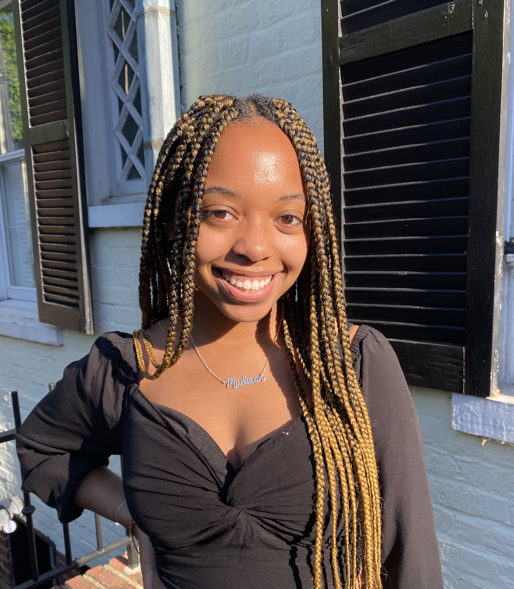

Jalyn Mathis
Journalist Student

Experience
Newsroom Editorial Intern
CNN
June 2022 – August 2022
I worked with the 9 a.m. newsroom show team tasked with editing videos, creating graphics and researching stories for writers and producers. I pitched story ideas daily, and helped write, copy and produce segments.
Black Explosion Newspaper Staff Writer
University of Maryland
September 2021 - present
I research and produce stories for an on-campus African American newspaper. I write minority-related news and articles of culture interest.
Summer Camp Director
Pinckneyville Community Center
June 2020 – August 2021
I directed camp operations including counselors’ assignments, camp themes and activities, and recreational activities. I developed strong communication, leadership, and problem-solving skills.
Summer Camp Counselor
Gwinnett Environmental and Heritage Center
May 2019 – August 2019
I coordinated and scheduled camp activities, while interacting and helping the children with their daily camp activities. I ensured safety and supervised campers.
Education
- Bachelor of Journalism, Journalism, Spanish minor, University of Maryland, May 2024
Skills
- Upper Intermediate Spanish
- Upper Intermediate French
- iNews. Construct and build show rundowns.
- Video editing with Premiere Pro
- Photo editing with Lightroom
- Journalism. Interned at CNN Newsroom. Staff writer for The Black Explosion. Director for Maryland Association of Black Journalists. Strong desires for fair and accurate storytelling.
- MS Office
- MS PowerPoint
- MS Excel
Contact me